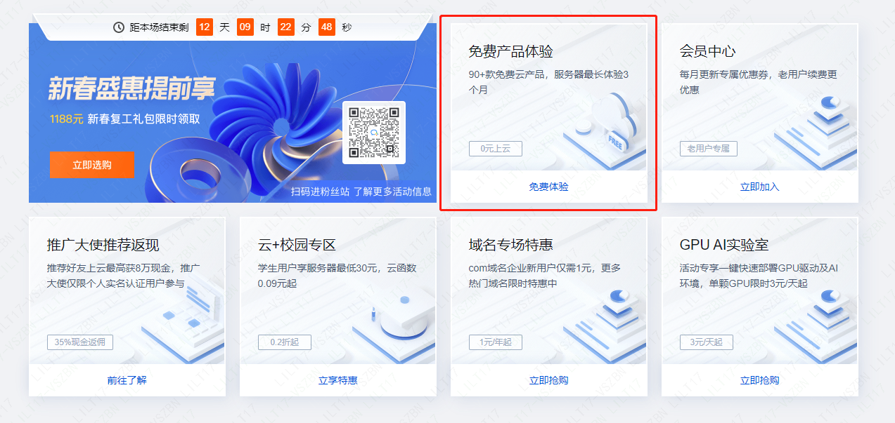
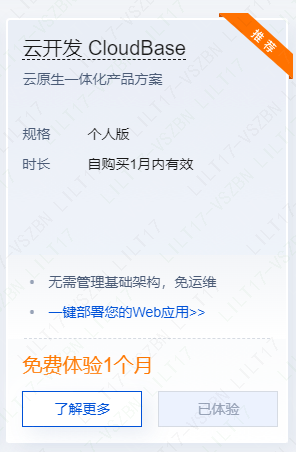
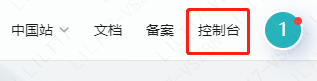
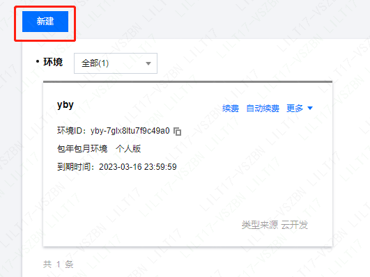
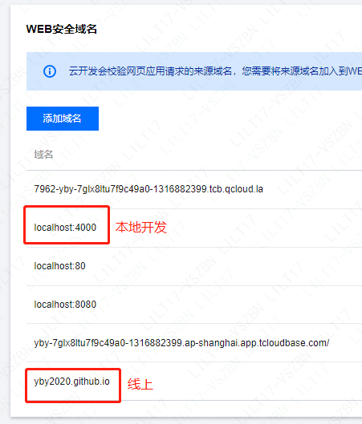
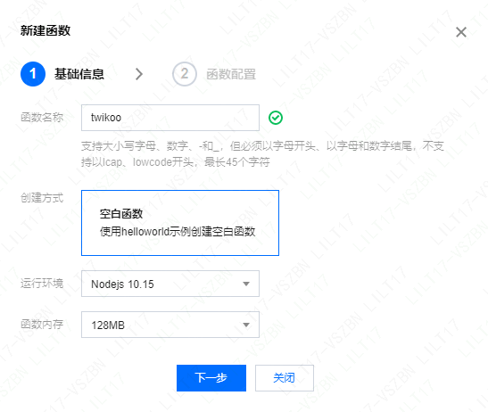
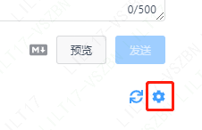
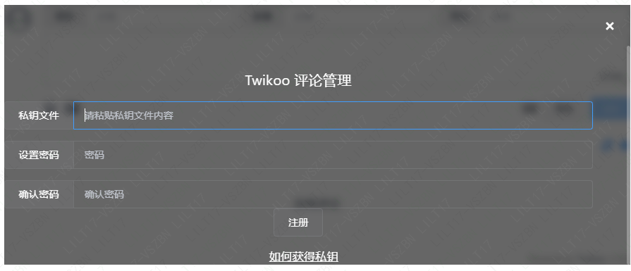
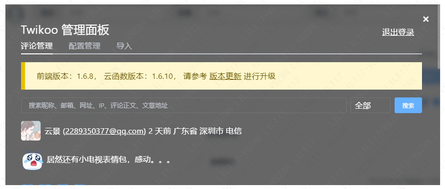

添加Twikoo评论插件
前言
添加评论模块不仅仅是添加一个组件那么简单，简言之就是涉及到与后端的交互，当然如今的网站评论系统已经做得非常成熟了，搭配一台云服务器，即可自动生成。
通过对比不同的评论系统，发现 twikoo 支持自动拉取 QQ 头像、图文评论、点赞回复、匿名评论等等功能，样式上也简单美观，所以本站选用 twikoo
腾讯云部署
1.进入活动专区
-

2.选择云开发

3.进入云开发控制台

4.新建环境
地域最好选择上海，如果选择广州的话，需要在
twikoo.init()时额外指定环境region: "ap-guangzhou"环境名称无所谓，符合要求即可

5.环境初始化
进入刚刚创建的环境，选择环境–>登录授权，启用“匿名登录”
选择环境–>安全配置，将网站域名添加到“WEB 安全域名”

选择环境–>环境总览，复制环境 ID（用于 fluid 配置）
6.开始手动部署 twikoo
选择基础服务–>云函数，新建云函数，按如图所示配置基础信息

- 下一步，函数配置，将函数代码替换为
exports.main = require('twikoo-func').main - 创建完成后，点击“twikoo”进入云函数详情页，进入“函数代码”标签，点击“文件 - 新建文件”，输入
package.json，回车 - 将代码
{ "dependencies": { "twikoo-func": "1.6.10" } }粘贴到代码框中，点击“保存并安装依赖”（注：此处的依赖版本需与官方最新版本保持一致） - 点击测试，将模板替换为请求对象（可保存模板）
1
2
3
4
5
6
7
8
9
10
11{
"event": "COMMENT_SUBMIT",
"accessToken": "b45b2e4c9ec943b884eb4cd9c044c4cd",
"nick": "云景",
"mail": "2289350377@qq.com",
"link": "",
"ua": "Mozilla/5.0 (Windows NT 10.0; Win64; x64) AppleWebKit/537.36 (KHTML, like Gecko) Chrome/110.0.0.0 Safari/537.36",
"url": "/api.html",
"href": "https://twikoo.js.org/api.html#example-3",
"comment": "<p>414</p>\n"
}- 下一步，函数配置，将函数代码替换为
hexo fluid 配置
打开_config.fluid.yml 文件
- 开启评论需要在主题配置中开启并指定评论模块：
1 | |
- 然后在下方设置对应评论模块的参数：
1 | |
如何管理评论
根据指引下载密钥，全选复制粘贴即可



图片评论
腾讯云环境自带云存储，所以腾讯云环境下可以直接上传图片，图片保存在云存储中。